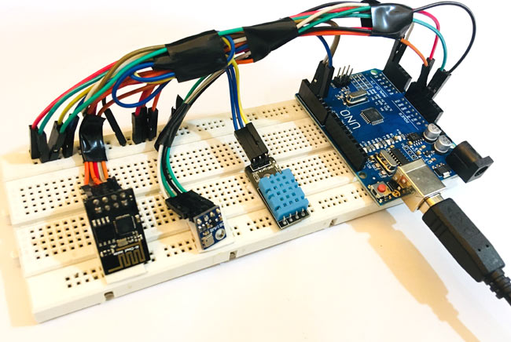
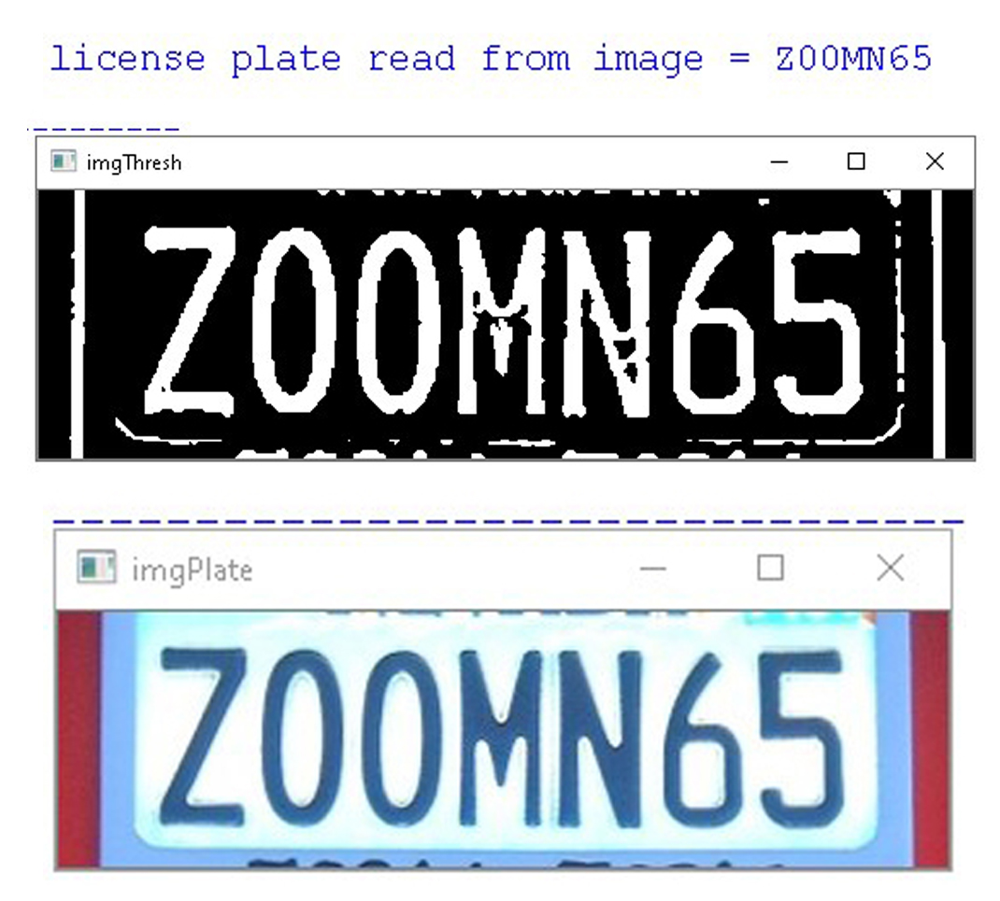
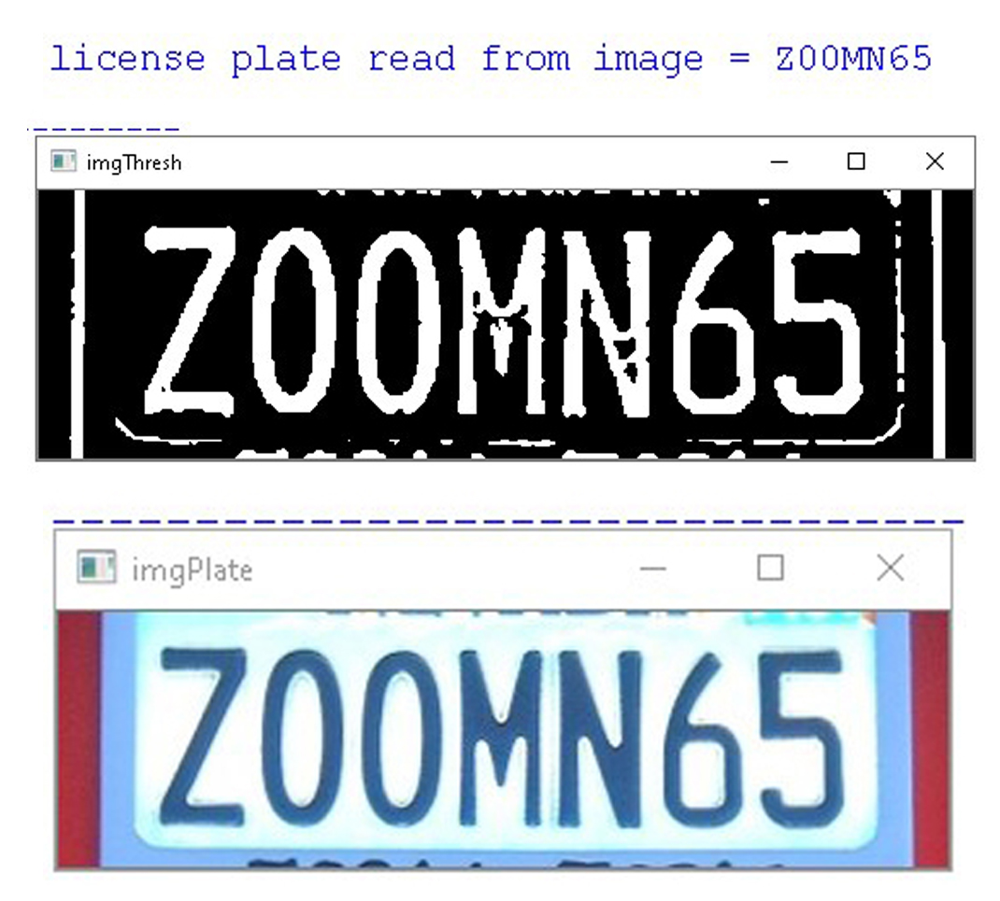

In fiber communication the fusion splice protection sleeve, Strip the fiber. Strip back all fiber
coatings down
to the 125um bare fiber. Clean the bare fiber with 99% isopropyl alcohol, Cleave the fiber.
The fiber needs to be cleaved with a high precision cleaver. Most splicing machines come with a
recommended cleaver. Fiber cleaving is a very important step as the quality of the splice will
depend
on the quality of the cleave, Put the fibers into the fiber holders in the fusion splicer. Press
the start button to start the fusion splicing Heat shrink the protection sleeve to protect the
splicing joint.

I opted to detect the plastic ball by colour so I need to set the colour range that I can use to
classify each
coloured ball. I use an array to hold the values of the lower and upper colour threshold. The colour
threshold
uses the HSV (Hue Saturation Value) colour profile. Before I can use the HSV profile values that
define the coloured ball,
I must convert the captured image to the HSV colour profile. Here I use the colour range I set for
the ball to create a mask.
The mask will make it more efficient to find contours around the detected object. The white area is
the area of interest that was
found within the colour range set above. I can use various image filters to improve the image mask.
Now with image mask we can proceed with
finding contours. All the white blobs in the mask will have contours applied. If the quality of the
mask is noisy, there is going to be a lot of contours – many small contours. To get useful object
detection,
I need to remove the contours I do not need.

Image segmentation can be achieved in different ways those are thresholding, region growing, water
sheds
and contours. To extract information regarding tumour, at first in the pre-processing level, the
extra parts
which are outside the skull and don't have any helpful information are removed and then anisotropic
diffusion
filter is applied to the MRI images to remove noise. By applying the fast bounding box (FBB)
algorithm, the
tumour area is displayed on the MRI image with a bounding box and. Then Support Vector Machine
classifies the
boundary and extracts the tumour.
ESP8266 wifi module enables internet connectivity to embedded applications, It uses TCP/UDP
communication
protocol to connect with server/client. To communicate with the ESP8266 wifi module, microcontroller
needs
to use set of AT commands to communicates with ESP8266 wifi module using UART having specified Baud
rate.
At the client end, we need to check ESP8266 responses on the serial terminal of PC/Laptop. Connect
ESP8266
module transmit pin (TX) to the receive pin (RX) of Arduino UNO and to receive pin (RX) of USB to
serial
converter to PC/Laptop. Open the serial terminal on PC/Laptop to see the ESP8266 responses for the
AT
command sent from Arduino UNO.



 
